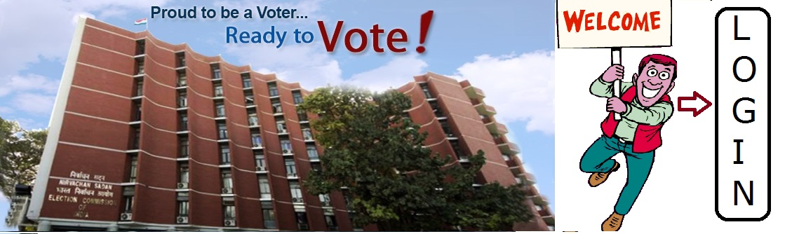

Indian Democracy
India is the seventh largest (by area) and the second most populous country in the world, with roughly one-sixth of its population, of about a billion and a quarter. India is one of the world's oldest civilizations, yet a very young nation. Under Mughal and Rajput control for much of its history until its colonisation by European powers in the mid-eighteenth century. The world's largest democracy by electorate was created after independence in 1947 under the leadership of its nationalist movement, the Indian National Congress.[1]
Elections to its Parliament are held once every 5 years. Currently, Prime minister Narendra Modi is the head of the government, enjoying a majority in the Parliament, while President Pranab Mukherjee, is the head of state. India is a constitutional republic governed under the world's longest written constitution, federally consisting of 29 states and seven centrally administered union territories, with New Delhi as the nation's capital.
The country has six main national parties: the Bhartiya Janta Party (BJP), Indian National Congress (INC), Communist Party of India (CPI), the Communist Party of India (Marxist) (CPI(M)), Bahujan Samaj Party (BSP) and the Nationalist Congress Party (NCP). At the level of its states, many regional parties stand for elections to state legislatures, every five years. The Rajya Sabha elections are held every 6 years.
Indian electoral system
The Parliament of India comprises the head of state and the two houses which are the legislature.
The president of India is elected for a five-year term by an electoral college consisting of members of federal and state legislatures.
The House of the People (Lok Sabha) represents citizens of India (as envisaged by the Constitution of India, currently the members of Lok Sabha are 545, out of which 543 are elected for five-year term and two members represent the Anglo-Indian community). The 545 members are elected under the plurality ('first past the post') electoral system.[9] The Council of States (Rajya Sabha) has 245 members, 233 members elected for a six-year term, with one-third retiring every two years. The members are indirectly elected, this being achieved by the votes of legislators in the state and union (federal) territories. The elected members are chosen under the system of proportional representation by means of the Single Transferable Vote. The twelve nominated members are usually an eclectic mix of eminent artists (including actors), scientists, jurists, sportspersons, businessmen and journalists and common people.[3]
History of elections in India
Lok Sabha is composed of representatives of the people chosen by direct election on the basis of the adult suffrage. The maximum strength of the House envisaged by the Constitution is 552, which is made up by election of up to 500 members to represent the States, up to 20 members to represent the Union Territories and not more than two members of the Anglo-Indian Community to be nominated by the President, if, in his/ her opinion, that community is not adequately represented in the lower house,Lok Sabha.
In 1952 Lok Sabha Elections there were 1874 candidates, which rose to 13952 candidates in 1996. However in 2009 Lok Sabha Elections only 8070 candidates contested.[10]
1st Lok Sabha (1951-52) (See below for results in party-wise details: Historical share of seats and votes section) 2nd Lok Sabha (1957) 3rd Lok Sabha (1962) 4th Lok Sabha (1967) 5th Lok Sabha (1971) 6th Lok Sabha (1977) 7th Lok Sabha (1980) (See below for results in party-wise details: Historical share of seats and votes section) 8th Lok Sabha (1984-85) 9th Lok Sabha (1989) 10th Lok Sabha (1991) 11th Lok Sabha (1996) 12th Lok Sabha (1998) 13th Lok Sabha (1999) 14th Lok Sabha (2004) (See below for results in party-wise details: Historical share of seats and votes section) 15th Lok Sabha (2009) 16th Lok Sabha (2014)
Historical share of seats and votes